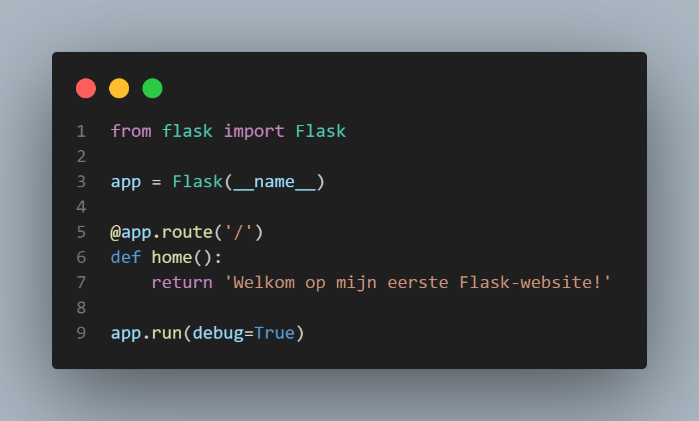

Een Website Maken met Flask in Python:
Een Stap-voor-Stap Tutorial
Inleiding
In deze tutorial ga je een simpele website maken met behulp van Flask, een populaire webframework in Python. Flask is een goede keuze voor beginners omdat het heel eenvoudig is en je snel kunt leren hoe je een website bouwt. Of je nu een hobbyist bent die nieuwsgierig is naar webontwikkeling of iemand die een webproject wil starten, deze tutorial is voor jou.
We gaan stap voor stap door het proces, zodat je begrijpt wat je doet en waarom. Aan het einde van deze tutorial kun je je eigen website draaien op je computer! Dus, open je teksteditor en laten we beginnen!
Wat heb je nodig?
Voordat we starten, moet je ervoor zorgen dat je een paar dingen hebt geïnstalleerd:
- Python: Dit is de programmeertaal die je gaat gebruiken. Je kunt Python downloaden van de officiële Python website.
- Flask: Dit is het framework waarmee we de website gaan bouwen. We installeren het later via de terminal.
Zodra je Python hebt geïnstalleerd, ben je klaar om aan de slag te gaan. Laten we nu beginnen!
Stap 1: Installeren van Flask
Flask is een extensie voor Python die we moeten installeren. Om dat te doen, openen we de terminal of command prompt op je computer.
Typ het volgende commando om Flask te installeren:
Druk op Enter. Dit zal Flask downloaden en installeren. Wanneer het installeren klaar is, kun je verdergaan naar de volgende stap.
Stap 2: Maak een nieuwe map voor je project
Het is altijd een goed idee om je werk netjes te organiseren. Maak een nieuwe map op je computer voor je project. Noem de map bijvoorbeeld mijn_flask_website. Dit maakt het makkelijker om al je bestanden te vinden.
Binnen de map maken we een Python bestand waar we onze code gaan schrijven. Open een teksteditor (zoals Visual Studio Code, Notepad++ of een andere editor naar keuze) en maak een nieuw bestand met de naam app.py.
Stap 3: Schrijf je eerste Flask-app
In het nieuwe bestand app.py gaan we de basis van de website schrijven. Dit doen we door Flask te importeren en een eenvoudige route in te stellen.
Wat is een route?
In webontwikkeling is een route een pad of URL die een gebruiker bezoekt op je website. Wanneer een gebruiker bijvoorbeeld naar http://localhost:5000 gaat, zal de website iets teruggeven, zoals een pagina met tekst.
Laten we nu de volgende code schrijven in app.py:

Uitleg van de code:
from flask import Flask: Hiermee importeren we het Flask-framework in ons project.app = Flask(__name__): Dit maakt een nieuwe Flask-applicatie aan zodat je alle commando's ervan kunt gebruiken.@app.route('/'):Dit is de route die wordt geactiveerd wanneer iemand naar de hoofdpagina van je website navigeert. Het pad '/' betekent de startpagina.def home():: Dit is de functie die wordt uitgevoerd wanneer iemand naar de hoofdpagina navigeert. In dit geval retourneert het een simpel bericht: "Welkom op mijn eerste Flask-website!".app.run(debug=True):Dit start de Flask-server. Hij wordt ook gestart in debug modus, zodat je snel fouten kunt oplossen (als die er zijn).
Stap 4: De website draaien
Nu we de basis van de website hebben geschreven, kunnen we de app uitvoeren. Ga terug naar de terminal, navigeer naar de map waar je app.py hebt opgeslagen, en typ het volgende commando:
Je zou een bericht moeten zien waarin staat dat de server opgestart is, bijvoorbeeld:
Dit betekent dat je website nu actief is op http://127.0.0.1:5000/. Open een browser en ga naar dat adres. Je zou de tekst "Welkom op mijn eerste Flask-website!" moeten zien.
Stap 5: Een HTML-pagina toevoegen
Nu willen we de simpele tekst vervangen door een echte webpagina. Maak een nieuwe map genaamd templates in je projectmap. Flask zoekt automatisch naar HTML-bestanden in deze map en hierdoor kan je deze gebruiken voor je website.
Maak een bestand genaamd index.html in de templates-map met de volgende code:
Nu moeten we de Python-code aanpassen om deze HTML-pagina te laten zien in plaats van de tekst. Wijzig de home functie in je app.py bestand als volgt:
Stap 6: De website vernieuwen
Sla je bestanden op en ga terug naar je terminal. Stop de server door CTRL+C in te drukken en start de server opnieuw:
Als je nu je website vernieuwt, zou je de HTML-pagina moeten zien die je hebt gemaakt. De tekst "Welkom op mijn Flask Website!" en de paragraaf "Dit is de startpagina van mijn eerste Flask-webapplicatie." zouden zichtbaar moeten zijn.
Stap 7: Meer pagina's toevoegen
Nu je een werkende website hebt, kun je gemakkelijk meer pagina's toevoegen. Maak bijvoorbeeld een nieuwe HTML-pagina genaamd over.html en voeg een nieuwe route toe in app.py:
De code voor over.html zou iets kunnen zijn zoals:
Conclusie
Gefeliciteerd! Je hebt nu een eenvoudige website gebouwd met Flask! Je hebt geleerd hoe je een server opzet, routes toevoegt en HTML-pagina's weergeeft.
Er is nog veel meer mogelijk met Flask, zoals het werken met formulieren, databases, en nog veel meer. Maar dit is een geweldige basis om mee te beginnen!
Veel plezier met het bouwen van je eigen Flask-websites!